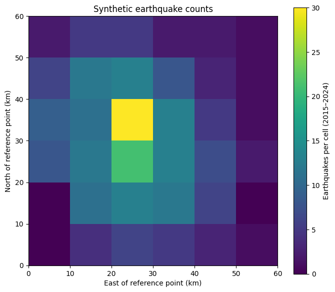

Question: Where are earthquakes occurring most frequently in a given region?
Reference notebook for The Pond. All observations and locations are synthetic, created for this activity; results are not evidence about a real site.
Preamble: From sketch to notebook
In a previous LiLyPad, you sketched a workflow to identify where earthquakes occur most frequently within a region.
Here, we use an earthquake catalog to investigate that question. The catalog is considered complete for earthquakes of magnitude 2.0 or greater between 2015 and 2024. We will select events that meet these criteria, count earthquakes within 10 × 10 km grid cells, and map their distribution.
As you work through the notebook, consider how the narrative, code, and results correspond to the data, analysis steps, and parameters in your sketch.
<b>Note:</b> Catalog completeness describes how reliably earthquakes are recorded. For this exercise, we assume that all earthquakes of magnitude 2.0 or greater within the study region were recorded during 2015–2024. Smaller earthquakes may be missing, so including them could make comparisons between locations misleading.
In this notebook, we will translate that sketch into a computational workflow. As you work through each section, notice:
What data does the step receive?
What operation does it perform?
What parameters or decisions control that operation?
What does it produce, and which step uses that output?
An output does not need to be saved as a separate file. It can be a table or another object held in memory, provided we explain what it contains and how it is used.
Follow each input → analysis → output connection in your sketch. Markdown explains meaning, documents choices, and describes manual steps; code performs computational operations; displayed tables and figures let us inspect the results.
<b>Note:</b> A notebook’s preamble introduces the scientific questions it addresses and explains how its analyses fit into the broader study. It is also a useful place to document data sources and software dependencies, including their versions.
Exploratory Data Analysis
Let’s first load our data and understand how it is organized.
Each row is a catalog record. event_id identifies an earthquake, and time gives its date and time in UTC. latitude and longitude describe its location in degrees, while magnitude describes its size.
Some earthquakes appear more than once in the catalog. Records with the same event_id refer to the same event and should only be counted once.
import numpy as npimport pandas as pdimport matplotlib.pyplot as pltraw = pd.read_csv("data/seismology.csv")print(f"Input: {len(raw)} records")display(raw.head())
Input: 515 records
event_id
time
longitude
latitude
magnitude
0
E0000
2013-01-01 00:00:00.000000000
-119.695477
35.291100
2.09
1
E0001
2013-01-10 12:18:45.450901803
-119.816487
35.323406
2.51
2
E0002
2013-01-20 00:37:30.901803607
-119.998902
35.176045
1.31
3
E0003
2013-01-29 12:56:16.352705411
-119.675510
35.207699
2.13
4
E0004
2013-02-08 01:15:01.803607214
-119.790403
35.207041
2.29
Data Pre-Processing
Our first step is to remove duplicate records so that each earthquake is counted only once. We use event_id to identify repeated events and retain the first record for each identifier.
<b>Note:</b> In this synthetic catalog, records with the same event identifier contain identical information. If they differed—for example, because an earthquake’s location or magnitude had been revised—we would need to decide which record to retain and document that choice.
To map earthquake locations, we need both latitude and longitude. We therefore remove records missing either coordinate. The resulting catalog contains one record per earthquake with a recorded location.
located = unique.dropna(subset=["latitude", "longitude"]).copy()print(f"{len(unique)} earthquakes → {len(located)} with both coordinates")display(located.head())
500 earthquakes → 494 with both coordinates
event_id
time
longitude
latitude
magnitude
0
E0000
2013-01-01 00:00:00+00:00
-119.695477
35.291100
2.09
1
E0001
2013-01-10 12:18:45.450901803+00:00
-119.816487
35.323406
2.51
2
E0002
2013-01-20 00:37:30.901803607+00:00
-119.998902
35.176045
1.31
3
E0003
2013-01-29 12:56:16.352705411+00:00
-119.675510
35.207699
2.13
4
E0004
2013-02-08 01:15:01.803607214+00:00
-119.790403
35.207041
2.29
We next restrict the catalog to earthquakes recorded between 2015 and 2024, the period for which catalog completeness is specified. We include events from January 1, 2015, up to—but not including—January 1, 2025. This retains the entire final day of 2024, regardless of the event’s time.
We now retain earthquakes with a magnitude of 2.0 or greater, the threshold above which the catalog is considered complete during our study period. Events with a magnitude exactly equal to 2.0 are included.
The resulting catalog contains one record per earthquake, with both coordinates available, recorded during 2015–2024, and meeting our magnitude threshold.
To compare earthquake counts across the region, we will divide it into 10 × 10 km grid cells. Our coordinates are currently in degrees of latitude and longitude, so we first express each earthquake’s location as a distance east and north of a reference point at 35°N, 120°W.
The resulting table retains the earthquake information and adds two columns: east_km and north_km.
<b>Note:</b> For this synthetic example, we use an approximate conversion from degrees to kilometers, accounting for longitude spacing at the reference latitude. Our grid cells are therefore approximately 10 × 10 km. For a real regional study, we would use a suitable projected coordinate system and document that choice.
We divide our study region into cells approximately 10 km wide in both directions. The grid extends from 0 to 60 km east and north of our reference point, forming 36 cells.
We then count the earthquakes within each cell over the full 2015–2024 period. The result is a two-dimensional array, counts, containing one earthquake count per cell, including zeros where no events were recorded.
<b>Note:</b> Cell size, grid origin, and spatial extent are all choices that should be documented. Changing the boundaries can change which earthquakes are grouped together. Events on a boundary are assigned to the cell beginning at that boundary, except along the outermost edge, which is included in the final cell.
CELL_KM =10EXTENT_KM =60x_edges = np.arange(0, EXTENT_KM + CELL_KM, CELL_KM)y_edges = np.arange(0, EXTENT_KM + CELL_KM, CELL_KM)# Check that all selected earthquakes fall within our study region.assert spatial["east_km"].between(0, EXTENT_KM).all()assert spatial["north_km"].between(0, EXTENT_KM).all()counts, x_edges, y_edges = np.histogram2d( spatial["east_km"], spatial["north_km"], bins=[x_edges, y_edges])counts = counts.astype(int)# Each earthquake should be counted exactly once.assert counts.sum() ==len(spatial)print(f"Grid: {counts.shape[0]} × {counts.shape[1]} cells")print(f"Total earthquakes counted: {counts.sum()}")print(f"Highest count in a single cell: {counts.max()}")
Grid: 6 × 6 cells
Total earthquakes counted: 253
Highest count in a single cell: 30
Visualization
Let’s map the number of earthquakes recorded in each grid cell. The color shows the total count during 2015–2024, with brighter colors indicating more events. The axes show distances east and north of our reference point.
fig, ax = plt.subplots(figsize=(7, 6))image = ax.pcolormesh( x_edges, y_edges, counts.T, cmap="viridis", shading="flat")fig.colorbar( image, ax=ax, label="Earthquakes per cell (2015–2024)")ax.set( xlabel="East of reference point (km)", ylabel="North of reference point (km)", title="Synthetic earthquake counts", aspect="equal")fig.tight_layout()

The highest-count cells identify where earthquakes occurred most frequently in this synthetic catalog during our study period. This pattern depends on our magnitude threshold, time interval, and grid boundaries.
The map shows earthquake counts, not earthquake hazard. It does not account for differences in earthquake magnitude above our threshold or estimate the likelihood of future damaging events.
If you need help, look at the workflow sketch below: